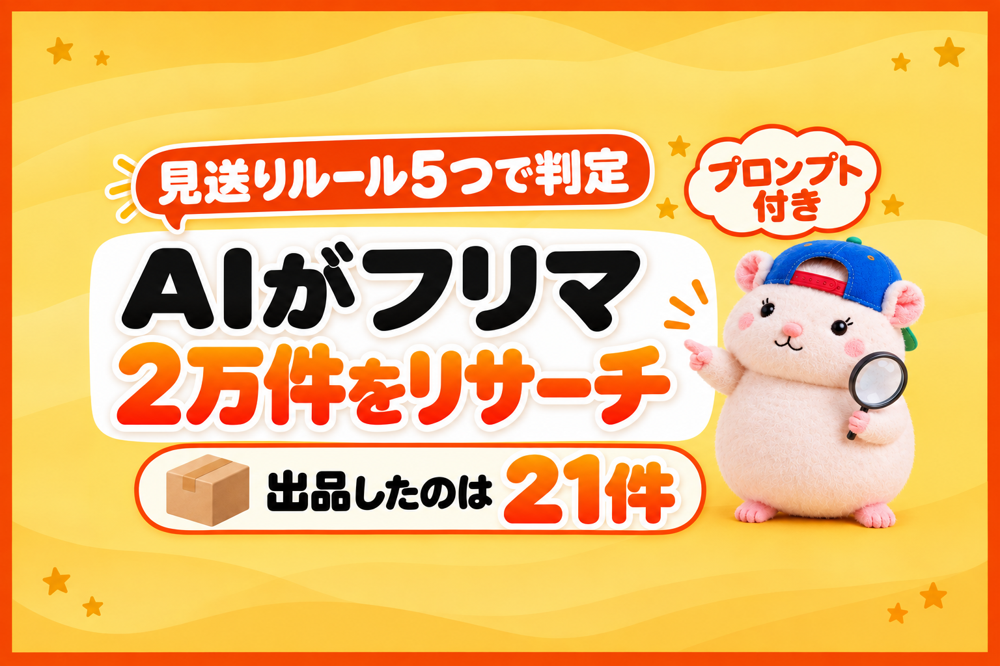

フリマ仕入れの無在庫で、いちばん時間がかかるのはリサーチです。
1件ずつ開いて、何の商品か確かめて、eBayの相場と比べる。
人の手でやると、1日に見られる数はかぎられます。
そこをAIに任せると、見られる量がけた違いに増えます。
例えば、ぼくの店では、フリマ・オークションサイトの中古品を、AIに1回で約2万件見てもらいました。
出品したのは、21件です。
量が増えるほど大事になるのは、「何を出すか」より「何を出さないか」です。
この記事で書くのは、3つです。
- AIに渡す「見送りのルール」は、5つの型で作る
- AIの読み違いは、「比べる相手がいない品」に出る
- 2回目からは、毎回ぜんぶを見なくていい
※ぼくの店の数字です。同じ結果を約束するものではありません。
① AIに渡す見送りのルールは、5つの型で作る
出典: 当店の自動仕入れの実行ログ(10/15 8:11の回・仕入先名と品目がわかる語はぼかし)
無在庫は、売れてから仕入れる売り方です。
出品しても、在庫のお金はかかりません。
無在庫×AIはバンバン出品できるのが強み。
だから、AIに見てもらう量は、多いほどいい。
ただし、量を見るほど、出してはいけない品も混ざります。
AIには「いい品を探して」と頼むより、「この品は見送って」をはっきり渡すほうが、ずれません。
扱っている商品がちがっても、見送りのルールは、だいたい次の5つの型に入ります。
- 本物か・中身が確かめられない品(メーカー名や品番が書いていない など)
- 売りたい物そのものではない品(部品・付属品・箱だけ・まとめ売り)
- 利益が出ない・リスクが大きい値段の品(安すぎる品・動作確認のない高額品)
- 何の商品か特定できない品(ブランドや型番が分からない)
- もう自分の店にある品(同じ型番を出品ずみ)
例えば、ぼくの店で約2万件を判定したときは、この5つで見送りの約97%でした。
いちばん多かったのは1つ目で、1万件をこえていました。
合格したのは、約1,000件に1件です。
大事なのは、AIに見送った理由を1件ずつ書かせることです。
理由が書いてあれば、あとで数えられます。
数えれば、どのルールがきつすぎるのか、どこを広げればいいのかが見えてきます。
AIには、こう渡せばOKです。
フリマ・オークションサイトの中古品を、eBayの無在庫の仕入れ候補として判定してください。
次のどれかに当たる品は見送って、見送った理由を1件ずつ書いてください。
①本物か・中身が確かめられない(メーカー名や品番がない)
②売りたい物そのものではない(部品・付属品・箱だけ・まとめ売り)
③利益が出ない・リスクが大きい値段(仕入値が◯円未満/動作確認のない◯円以上の品)
④ブランドか型番が分からない(出品者の管理番号・途中で切れた番号は「分からない」にする)
⑤自分の店に、同じ型番がもうある
合格した品と、見送りの理由ごとの件数を一覧にしてください。まだ出品しないでください。
◯円には、あなたの店の値を入れてください(うちは、仕入値1,000円未満を見送っています)。
② AIの読み違いは、「比べる相手がいない品」に出る
出典: 当店の仕入れ判定プログラムの変更記録(10/15の朝・品目がわかる語はぼかし)
AIにも、読み違いはあります。
いちばん多いのは、それっぽい英字と数字を、型番だと思いこむことです。
- 出品者が、自分の在庫に付けている管理番号
- 取り付け先(いっしょに使う機械)の型式
- 途中で切れた型番
例えば、ぼくの店では、出品した21件のうち7件が、この読み違いでした。
すぐに取り下げて、その日のうちにルールを直しています。
見直していて気づいたのは、7件とも「eBayに比べる相手がいない品」だったことです。
eBayに同じ型番の出品があった品では、読み違いは0件でした。
eBayに同じ型番が1件もないのは、めずらしい品だから、とは限りません。
型番のほうが、まちがっているのかもしれない。
なので、AIに任せるときは、この3つを足しておくと安心です。
- eBayに比べる相手がいない品は、出す前に型番を見直す
- 管理番号のような形の番号は、型番の候補から外す
- 数字だけ・途中で切れた番号の品は出さない
③ 2回目からは、毎回ぜんぶを見なくていい
最初の1回は、ぜんぶを見る。
2回目からは、新しく出た品と、値段が変わった品だけを判定すれば十分です。
例えば、ぼくの店では、2回目からは1回300〜500件ほど。
これを、朝と晩にくり返しています。
もう1つ、セットで大事なのが売り切れの見張りです。
無在庫は、仕入元で売れてしまったら、こちらの出品も止めないといけません。
ぼくの店では、在庫を見張る担当(AI社員)が3時間ごとに確かめて、売り切れた品を在庫ゼロにしています。
eBayの公式のAPI(ほかのシステムとデータをやりとりする窓口)は、無料で使えます。
▼eBayのAPIは0円(10月16日の記事)

まとめ: AIにリサーチを任せるなら、まず「見送り」を決める
- 見送りのルールは5つの型で → 確かめられない・売りたい物じゃない・利益が出ない・特定できない・もうある。理由は1件ずつ書かせる
- 読み違いは、比べる相手がいない品に出る → 出す前に、そこから見直す
- 2回目からは、新着と値下がりだけ → 売り切れの見張りもセットで
うちは、eBay Japanに書面で確認した範囲(公式のAPIを使う・お客さんの個人情報をAIに渡さない・AIでeBayの画面を開かない)で、AIを使っています。
AIをどこまで使うかは、eBayや仕入元のサイトの規約を確認したうえで、自己責任でお願いします。
人の目では、2万件は見られません。
AIなら、見てもらえます。
あなたが決めるのは、見送りのルールだけ。
台帳に書いておこう🐹
▼中の人🏠(レンタルスペース23部屋・売上1.5億)のレンスペ実録

▼ブログ(eBay×レンスペ、全記事まとめ)

▼この店のやり方は、ぜんぶ1冊にまとめてあります
リサーチ・出品・値付け・顧客対応まで、初月利益10万4,286円を出した実店舗の記録と手順を全部書いた教科書です。
読んだその日から、AI社員の作り方をそのまま真似できます。
『AI × eBay輸出の教科書 — 梱包以外、ぜんぶAI』


🎁 10/31(土)までに買った人には、11月下旬に発売予定の「AI顧客対応ツール」(販売予定価格9,800円)を発売時に無料でお渡しします(これまでに買った人も対象)。
内容・最新価格は販売ページをご確認ください。